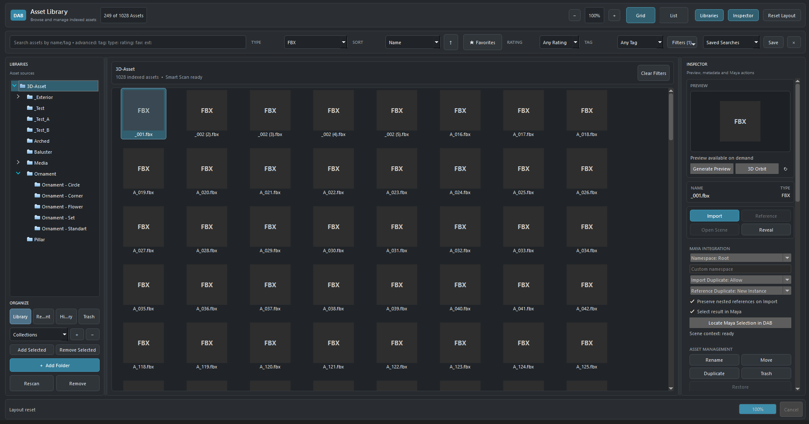
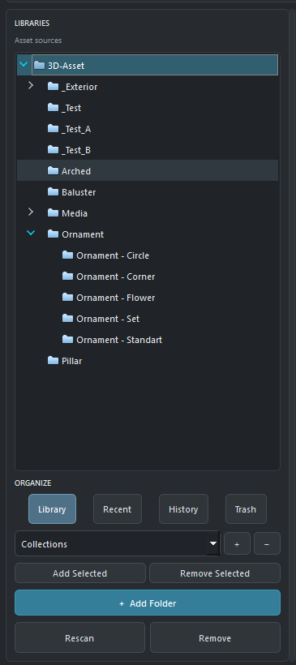
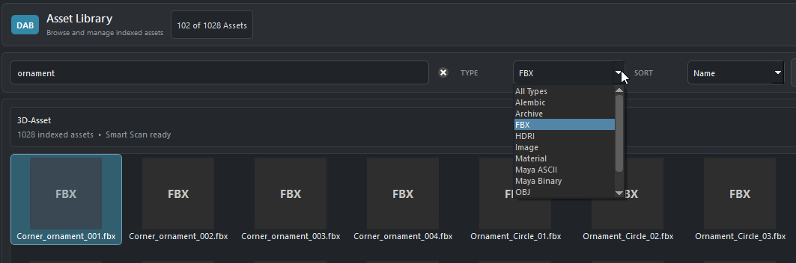
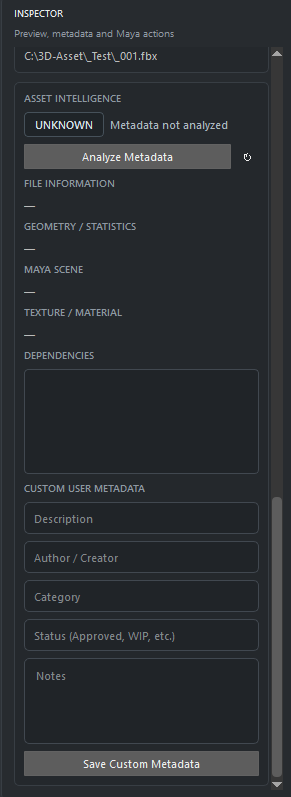
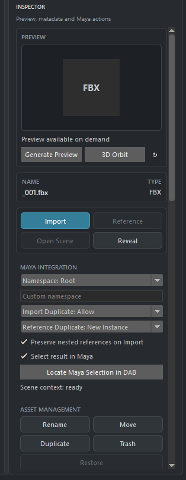
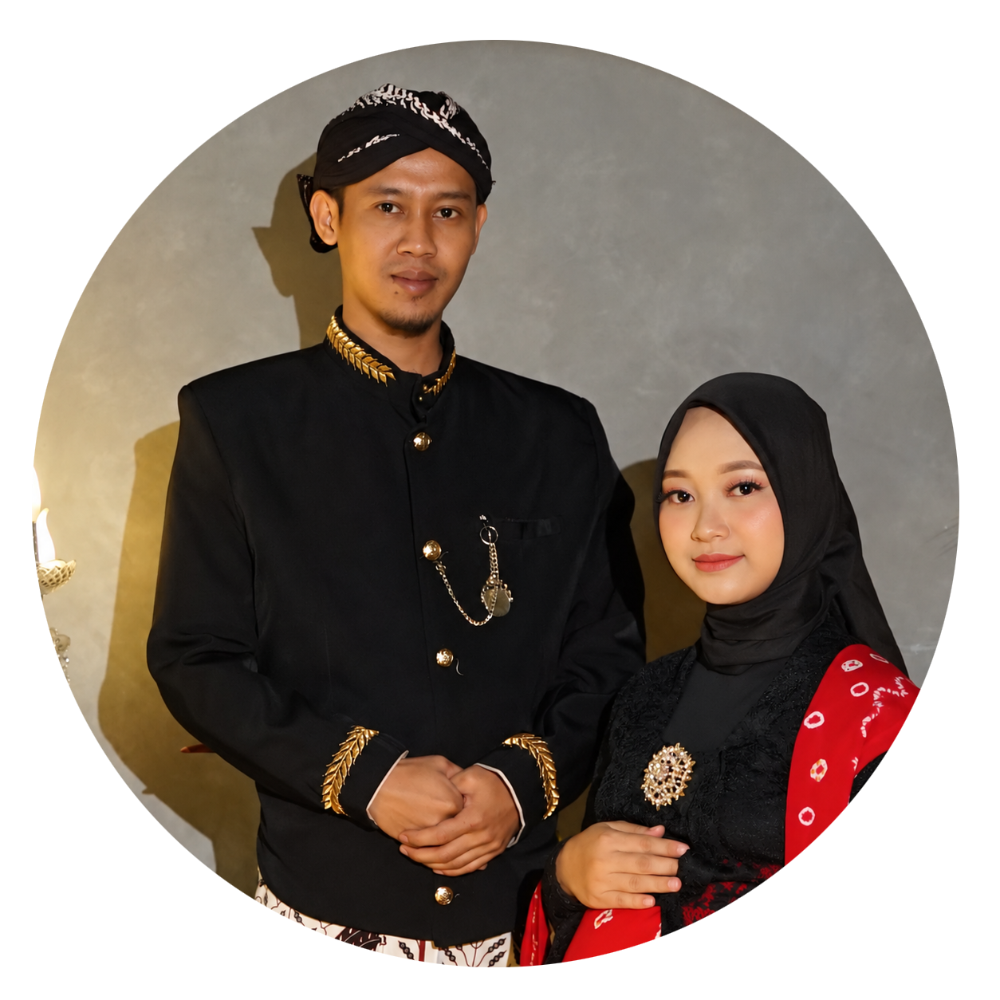

Single independent core
At this early stage, DEEVLA is intentionally kept small and focused so its core technology, product architecture, engineering standards, and long-term direction can be established carefully before the team expands.
DEEVLA is an independent DCC technology initiative focused on improving digital content creation workflows. Its first product, DEEVLA Asset Browser (DAB), is being developed as a high-performance asset and workflow infrastructure for Autodesk Maya. Beyond DAB, DEEVLA's product direction includes artist tools, plugins, workflow automation, production intelligence, and longer-term orchestration concepts for Maya-centered 3D workflows.
DEEVLA began as an independent effort to explore better ways of working inside modern DCC environments. The first DAB concept and early prototypes began in 2025. More focused and structured development began in August 2026 as DAB became the first product under the DEEVLA initiative.
DEEVLA is currently developed by its founder as an independent project. Certain visual assets, such as selected icons, may receive occasional voluntary creative contributions from external collaborators. These contributors are not employees or members of the DEEVLA development team.
DEEVLA is currently a founder-led independent development initiative, with Riyadus Solihin serving as its founding developer and the primary person responsible for product direction, research, workflow design, prototyping, development, and validation.
At this early stage, DEEVLA is intentionally kept small and focused so its core technology, product architecture, engineering standards, and long-term direction can be established carefully before the team expands.
Current Team: 1 founder. Employees: 0. Selected visual assets may receive occasional voluntary creative contributions from external collaborators, but those contributors are not employees or members of the DEEVLA development team.
Team growth is intended to follow real product and engineering needs rather than expanding prematurely. The goal is to keep development focused, maintainable, and technically disciplined.
As DEEVLA products mature and the development scope grows, the initiative may recruit software developers, technical artists, UI/UX specialists, pipeline engineers, QA/testing specialists, and other professionals whose expertise matches the requirements of future products.
The long-term objective is to build a capable professional development team that can create reliable, production-oriented tools, plugins, workflow technologies, and developer solutions for Autodesk Maya users and modern DCC production workflows.
DEEVLA is currently being built from a single independent core. The intention is not to remain permanently as a one-person project, but to establish a strong technical and product foundation first. As the initiative grows, DEEVLA aims to evolve into a professional development team capable of supporting multiple Autodesk Maya products and long-term DCC technology development.
DEEVLA Asset Browser is the first product being developed by DEEVLA for Autodesk Maya. DAB is not intended to be only a thumbnail browser. It is being designed as an asset and workflow layer that helps artists and technical users organize, discover, inspect, manage, and use production assets efficiently while minimizing interruptions to Maya's creative workflow.
DAB targets large asset libraries, fast discovery, persistent metadata, background processing, scalable indexing, and responsive interaction inside a Maya-centered workflow.
Planned Maya workflows include import, open, reference, scene-context awareness, Maya commands, and supported scripting/API integration.
Expensive operations such as indexing, thumbnail generation, metadata extraction, and dependency analysis are intended to run through background job systems where appropriate.
Current DAB product showcase: The screenshots below show the current user-interface direction and working product areas that are actively being developed and tested. They are presented to show that DAB is already being shaped as a real Maya-integrated tool, not only as a concept. Every image can be clicked to zoom, and the screenshots below are intentionally shown as compact previews so the section stays cleaner and easier to scan.

Click to ZoomThis overview shows the current main workspace direction: the left side is used for library and folder navigation, the center is focused on large-scale asset browsing, and the right side is reserved for preview, metadata, Maya actions, and management controls. It is also part of the effort to make DAB feel visually closer to Maya so the tool appears more naturally integrated inside the host environment.

Click to ZoomThis panel demonstrates how artists can register asset sources, browse folder hierarchies, switch organizational views, work with collections, and trigger operations such as add folder, rescan, or remove. It reflects DAB's goal of keeping large asset libraries structured and manageable inside a Maya-centered workflow.

Click to ZoomThis view highlights a core part of the artist workflow: fast search, type filtering, sorting, and visual browsing of indexed assets. The intention is to reduce time spent manually hunting through folders and to make large libraries more searchable and production-friendly.

Click to ZoomThe inspector direction includes asset intelligence status, technical information areas, dependency visibility, and custom user metadata fields such as description, author, category, approval status, and notes. This is important because DAB is intended to help artists not only find assets, but also understand and manage them more clearly.

Click to ZoomThis inspector area shows the practical Maya-facing part of DAB: preview on demand, direct import and reference actions, scene-context options, namespace and duplicate handling, selection-related actions, and asset management commands. It helps demonstrate how DAB is being designed to connect asset browsing directly to real Maya usage.
At first glance, it may sound simple: just a tool for storing, searching, and managing assets. But I see it from a different perspective. I understand that much of today's AI-generated 3D output is not yet truly production-ready. Generating a shape quickly is one thing; creating an asset that can genuinely enter a production pipeline is another.
Production assets need to be inspectable, repairable, editable, extensible, and able to continue through an artist-driven workflow. I find the direction of technologies such as Flow Studio, and the technology that evolved from Wonder Studio, especially interesting because the result should not stop at something that only looks good. There is a real need for output to remain riggable, editable, retexturable, animatable, and usable in a real production workflow.
From what I have studied, I also see Autodesk placing strong emphasis on quality, interoperability, editability, and production-readiness, rather than focusing only on the ability to generate something automatically.
DEEVLA then becomes the production orchestrator:
At that point, DEEVLA Asset Browser is no longer just a place to store assets. It becomes production memory. It knows what has already been created, what is clean, what has already been validated, what is safe to reuse, and what still needs to be created. And AI does not need to generate everything from scratch.
In fact, I believe a truly intelligent system should first ask:
If it already exists, use the asset that has been created, inspected, and validated by an artist. If it does not exist, the system can help create it. Generated results should not immediately be considered finished; they still need refinement, topology, UV, material, naming, validation, optimization, and pipeline checks before they can genuinely be considered production-ready. The question is therefore no longer simply what an Asset Browser can do, but what it can become as part of a larger production system.
That is where I see the larger opportunity: not to replace artists, and not simply to generate 3D faster, but to build a system where AI, asset libraries, tools, and artists can work together while keeping results editable, controllable, reusable, and production-ready. I also do not want to jump directly into that distant vision without first building a strong foundation. I want to build it step by step, starting with DEEVLA Asset Browser becoming stable, fast, responsive, non-blocking, and comfortable to use inside a real Maya workflow.
If the asset library, indexing, metadata, search, preview, Maya integration, background processing, and asset management are not yet stable, then it is too early to talk about a complex autonomous AI workflow. My approach is simple: build the foundation, stabilize it, validate it, and only then evolve toward more future-facing capabilities.
DAB is under active development. The status below is intended to make the current maturity of the product easier to understand and to avoid presenting roadmap concepts as already-complete release features.
DAB is being structured to support Maya 2025 and later through a centralized compatibility and capability layer.
Maya 2027.2 is the current primary development and validation environment while multi-version compatibility work continues.
Current development and validation are centered on the Windows desktop Maya environment.
Current validation combines automated regression coverage with real Maya workflow checks on the primary host. Broader version validation will expand as release packaging matures.
Documentation is still in development. The initial documentation structure will focus on helping users install DAB, understand the asset-library workflow, and quickly find assets without requiring knowledge of DAB's internal architecture.
The following areas represent the planned capability direction for DAB. Features are being developed incrementally; items listed here describe the product roadmap and technical direction rather than claiming that every capability is already complete.
DAB is intentionally not built around a single programming language. The planned architecture uses different technologies for the jobs they are best suited to. Python provides direct, flexible integration with Autodesk Maya and rapid extension of artist workflows, while C++ is reserved for performance-sensitive native core operations where throughput, memory efficiency, and low overhead matter. The two layers are connected through a controlled binding layer so DAB can remain both fast and maintainable.
| Technology | Role in DAB | Why it is used |
|---|---|---|
| Python | Maya host integration, application orchestration, commands, extensibility, services, and workflow logic. | Python is deeply established in Maya pipelines, allows rapid development, and keeps artist/pipeline extensions accessible. |
| PySide6 / Qt6 | Dockable Maya UI, library views, asset grids, search/filter controls, metadata panels, settings, and user interaction. | Provides a modern Qt interface that can integrate naturally with supported Maya desktop workflows. |
| Modern C++ | Performance-critical native core operations such as heavy scanning/indexing workloads, hashing, cache processing, and other compute-heavy tasks where profiling justifies native code. | Keeps expensive operations fast while avoiding the cost and complexity of moving the entire application into C++. |
| pybind11 | Controlled bridge between the C++ native core and Python application / Maya integration layer. | Allows a small, focused native surface instead of a large custom C++ wrapper architecture. |
| SQLite | Local asset index, metadata, tags, ratings, collections, search state, and migration-managed persistence. | Reliable embedded persistence without requiring a separate database server for normal desktop use. |
| Maya Python / OpenMaya APIs | Scene context, selection, events, import/open/reference operations, callbacks, host capabilities, and Maya-aware actions. | Provides direct integration with the Maya runtime instead of treating Maya as only an external file target. |
| OpenUSD / MaterialX | Planned interoperability direction for modern scene, asset, and material workflows. | Supports a more open and pipeline-friendly future rather than locking the asset system to a single proprietary representation. |
Maya host integration, UI, services, core systems, native acceleration, persistence, and asset providers are separated to keep responsibilities clear and reduce tightly coupled code.
Scanning, indexing, thumbnail generation, metadata extraction, duplicate detection, and other expensive operations are designed to use job/worker systems where safe so Maya remains responsive.
C++ is used selectively for measured performance needs. DAB avoids creating a large native wrapper when Python can provide the same function cleanly and maintainably.
The target is one maintainable codebase for Maya 2025 and later, with a host/compatibility layer and capability detection rather than scattered version checks or separate forks.
Search, metadata, preview, formats, pipeline integration, and future studio extensions are planned around explicit service/provider contracts so capabilities can grow without rebuilding the core.
The direction includes versioned data migrations, regression testing, error recovery, dependency and license review, performance measurement, and packaging designed for commercial distribution.
Engineering objective: DAB is being designed using production-grade software engineering practices commonly used in professional tools and pipeline development: modular boundaries, explicit contracts, measured native acceleration, persistent data migrations, background processing, compatibility isolation, testing, and maintainable extension points.
DAB is intended to provide a simple artist-facing workflow while a structured data and background-processing layer keeps the asset library searchable, current, and ready for Maya. The workflow below represents the planned product direction and does not imply that every capability is already complete.
The user adds one or more local or supported shared asset locations. DAB records the library configuration, root paths, availability, and basic source state without changing the original production files.
DAB discovers supported files and folders, detects new, changed, moved, or missing items, and avoids a full rescan when only part of the library has changed.
Asset identity, path information, type, timestamps, library relationship, and other core state are written into the local persistent index so assets can be found without repeatedly walking the file system.
Suitable background jobs can generate thumbnails, extract metadata, update cache entries, inspect related files, and prepare additional information without unnecessarily blocking Maya's main UI thread.
Artists browse visually or narrow large libraries using search, filters, sorting, tags, favorites, ratings, collections, and other discovery tools planned for the DAB library experience.
Before use, the artist can inspect asset information, preview data, technical metadata, availability, dependency status, and other relevant warnings or context where supported.
DAB determines the appropriate supported workflow for the selected asset and Maya context, such as Import, Reference, Open, or another registered action exposed through the Maya integration layer.
The selected operation is executed through supported Maya scripting/API mechanisms. DAB can then refresh relevant usage, recent-item, library, or asset state so the browser remains synchronized with the workflow.
Browse → Search → Filter → Preview → Inspect → choose an action. The goal is to keep everyday interaction direct and understandable rather than exposing internal indexing complexity to the artist.
Scan → incremental index → metadata → thumbnails → cache → dependency/duplicate analysis. Suitable heavy operations are intended to run through queued background work while preserving Maya responsiveness.
Scene context → host capability checks → supported Maya command/API action → import/reference/open → state reconciliation. Maya remains the primary DCC host rather than being treated as only a file destination.
DAB is currently focused on direct desktop integration with Maya. The initial technical direction uses Python and Maya-supported scripting/API interfaces. Native components may be introduced only where performance-critical operations justify them, while keeping the integration architecture modular and maintainable.
Maya-specific commands, callbacks, host detection, scene context, and compatibility behavior are separated from DAB's core services to avoid scattering host-version logic throughout the application.
DAB targets Maya 2025 and later using capability detection and a compatibility layer rather than maintaining separate source forks for every Maya version.
The development approach is Python-first for Maya integration and extensibility, with native code reserved for operations that genuinely benefit from lower-level performance.
The architecture separates Maya integration, UI, services, core systems, background processing, data persistence, and asset sources so that DAB can grow without tightly coupling every subsystem.
 Click to Zoom
Click to Zoom
DAB is being structured around service/provider contracts so that future capabilities can be added without rebuilding the entire core application.
 Click to Zoom
Click to Zoom
The first product and current primary development focus. DAB is planned as a high-performance asset and workflow infrastructure for Autodesk Maya, helping users discover, inspect, manage, and use production assets with less interruption.
After DAB, DEEVLA plans to develop additional artist productivity tools, workflow automation, pipeline utilities, specialized plugins, and technical workflow solutions for Maya users. One major direction is the DEEVLA Smart Modeling Toolkit, a context-aware modeling tool family built around topology, curvature, selection, symmetry, validation, and artist intent.
A longer-term exploration of asset intelligence, scene understanding, AI-assisted production, validation, automation, and production orchestration. This is a future direction rather than a promised release milestone, and it is intended to evolve only after the underlying DAB and tool foundations become stable and dependable.
After DAB, one of DEEVLA's major product directions is a family of focused Maya tools and plugins. A key concept is the DEEVLA Smart Modeling Toolkit: modeling operations that inspect topology, curvature, normals, selection context, symmetry, boundaries, and production intent before applying an operation. Rather than simply recreating existing Maya modeling commands, DEEVLA is exploring an intelligence layer around the modeling workflow — allowing familiar operations to evaluate context, identify better candidates, anticipate common topology problems, and make more informed decisions before execution. The goal is not to hide Maya, but to make repetitive modeling decisions faster, safer, and more context-aware while keeping the workflow lightweight and familiar to Maya artists.
Move beyond one-command/one-result behavior by evaluating the current mesh and selection before suggesting or applying the most appropriate modeling operation.
Automate common preparation, cleanup, alignment, validation, topology checks, and repetitive parameter decisions so artists can spend more time on shape and design.
Bring selected procedural and context-driven ideas into Maya without trying to turn Maya into another DCC. Tools should remain fast, focused, undoable, predictable, and familiar to Maya users.
Priority package concept: Smart Boolean, Smart Cleanup, Smart Topology Flow, Smart Selection, and Smart Modeling Assistant can form the first focused subset of the DEEVLA Smart Modeling Toolkit. “Smart Cleanup” and “Smart Topology Flow” act as umbrella systems that combine several of the specialized analysis and repair ideas below.
DEEVLA is a fully independent development initiative founded on original ideas, research, and innovation. It is developed independently and is not affiliated with, sponsored by, or created on behalf of any external studio or company.
DEEVLA is not currently using Autodesk Platform Services (APS) APIs. The current development focus is direct desktop integration with Autodesk Maya. APS may be evaluated in the future only if a specific product requirement benefits from it.
DEEVLA is applying to ADN to develop and validate Maya-integrated products in the appropriate Autodesk development environment and to gain access to the technical resources needed to build reliable, maintainable integration with Autodesk Maya.
Application Context: DEEVLA is an independent, founder-led initiative founded in August 2026, with one founder and zero employees. It is not part of an official startup/incubator program. The first product is DEEVLA Asset Browser (DAB), currently focused on direct Autodesk Maya desktop integration; Autodesk Platform Services (APS) APIs are not currently used.
Access to the appropriate Autodesk Maya development and testing environment for building and validating DEEVLA products.
Developer documentation, API guidance, technical resources, and support for Autodesk Maya integration and compatibility.
Testing DAB and future DEEVLA products across supported Autodesk Maya environments as the product evolves.
DEEVLA is currently founder-led. For development, technical, product, partnership, or business correspondence, please use the contact information below.
